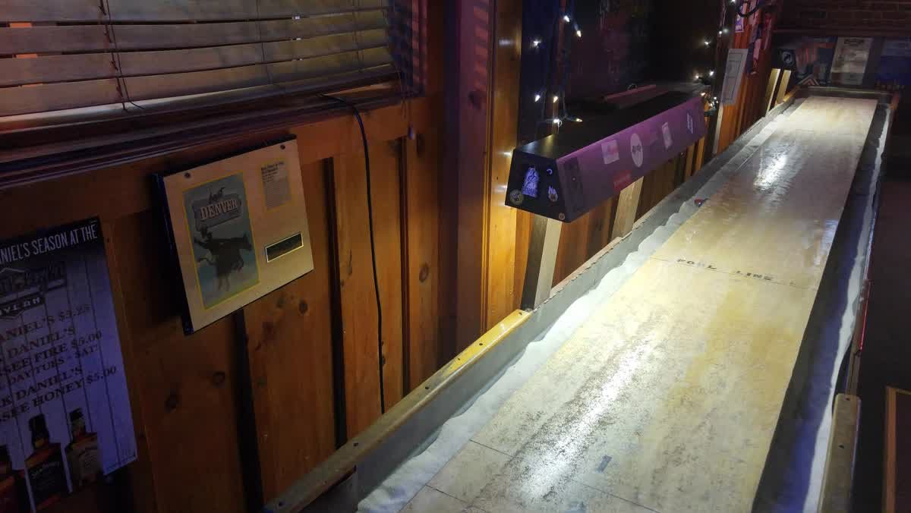

Names on the brick
A lived-in Wash Park dive — warm amber, blue neon, and a column of regulars written in paint.
Photo: Westword / Sarah McGill
Wash Park · South Pearl · Denver
A proud neighborhood dive where the neon still burns, the shuffleboard stays chalked, and legendary bartender Scott Hanley pours like he’s been doing it forever — because he has.
2025 HOSPY · Bartender of the Year · Colorado Restaurant Association
Behind the stick
Longtime Candlelight bartender. Co-owner Lisa Bryan called him “a legend.” In 2025, Colorado’s hospitality industry agreed.

Scott is “a legend.” — Lisa Bryan, co-owner · Westword, Feb 2, 2017
Scott tends bar at Candlelight alongside Chris Johnson — podcasts put them at roughly 22 years together behind the stick. On Nov 10, 2025 at Seawell Ballroom, the Colorado Restaurant Association named Scott the 2025 HOSPY Bartender of the Year (finalists included Devin Ershow and Lexi Parker).
When Scott faced cancer in 2018, the neighborhood rallied around him. He’s still behind the stick — and now a HOSPY winner.
383 S Pearl
Owned by Lisa & Dave Bryan since 1997 (J & B Tavern Inc). Neon sign. Cheap drinks. A Detroit Lions / Broncos crowd. Westword Best Dive Bar 2020 · Best Shuffleboard 2019. Cameo in the 1997 Stephen King The Shining TV miniseries.
A lived-in Wash Park dive — warm amber, blue neon, and a column of regulars written in paint.
Photo: Westword / Sarah McGill

Photo: Westword · Best Shuffleboard 2019
Kitchen roughly until ~11:30pm. Favorites include the jalapeño cream cheese burger, chili, wings, and onion rings. Happy hour Mon–Fri 4–6: $3.75 wells & domestic bottles. Dave Bryan’s Detroit Lions loyalty earned the bar its “Lions Den of Denver” reputation — Broncos fans welcome too.
From the stools
Exact guest words — no invented praise.
Scott is the nicest bartender in all of Denver. Amazing wings and kitchen staff. And you can play real darts!
The bartender Scott…is a real hoot!
Scott is the best, super friendly!!!
Weekends for bartenders Scott and Chris — burgers, wings, and games.
Names like Chris and Scott come up often, described as the kind of steady hosts who make everyone feel like a longtime regular.
Detroit Lions Den of Denver.
Pull up a stool
Open 365 — never closes for holidays (Westword). Come for Scott and Chris; stay for the neon.
Owners: Lisa & Dave Bryan since 1997. Also known for the Kentucky Inn (Westword 2013).